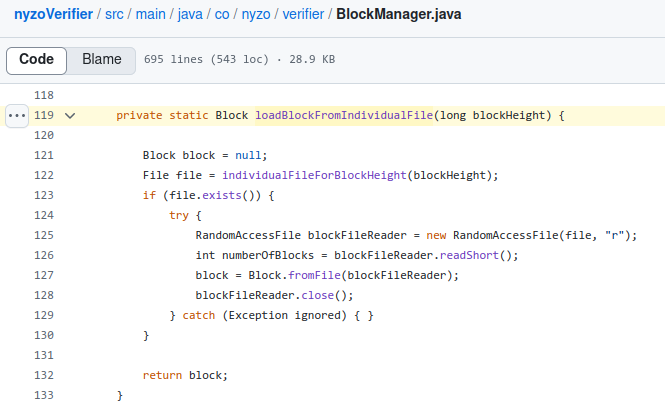
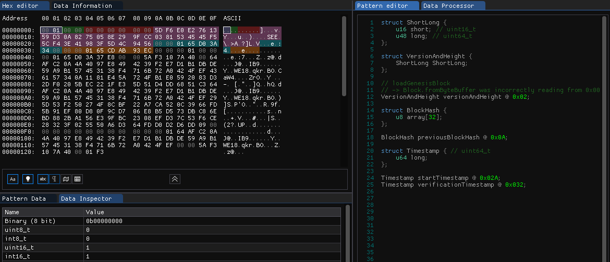
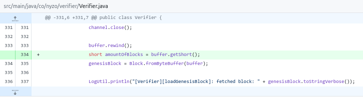

Author: Benjamin Van Renterghem @ construct0 FV
Date: 02/10/2024
Last updated: 02/10/2024
Nyzo version 646 (commit on construct0's GitHub) introduces a bug fix in regards to how the fetched genesis block file is handled & incorporated on the system. Changes have been released on construct0's nyzoVerifier repository.
This version affects the Verifier and Sentinel run modes. It does not affect the Client.
Subversion 0 is the final subversion and concludes the release of this major version release.
Version 645.0 updated nyzo.co references to the nyzo.org web domain, this was necessary due to the nyzo.co being void of any infrastructure it once housed. Providing an equivalent data service on the seed and blocks subdomains went without problems other than an issue arising in regards to how the genesis block which is fetched is loaded in order to store it on the system for further use.
This issue only presents itself when the genesis block is not present on the system, should the genesis block be present the loadBlockFromIndividualFile method of the BlockManager class, introduced in version 586, loads the block in a correct manner and does not prevent a verifier or sentinel from completing its startup procedure.
For reference, the existing method used to load the genesis block present on-disk:
Upon inspecting the genesis block file & the loadGenesisBlock method of the Verifier class, it came to light that the block file contains two bytes (in position 0x00 and 0x01) representing the amount of blocks which the file contains in the Short type format.
As can be seen above, the loadBlockFromIndividualFile correctly reads this amount in order to advance the position of the reader by 2. Further reads use the correct starting position to create a Block instance.
The loadGenesisBlock method did not read the amount of blocks from the byte buffer, subsequent reads were offset by 2 bytes until an exception occurred. In order to prevent the issue from occurring in the future (i.e. modifying the method and not the genesis block file served by nyzo.org) the necessary read operation was added to the method.
For clarity, the Sentinel run mode is also affected by this change, as it uses the loadGenesisBlock method present in the Verifier class.
The Client run mode is unaffected as the genesis block is loaded by contacting verifiers listed in the trusted_entry_points file using the loadGenesisBlock method of the ClientDataManager class.